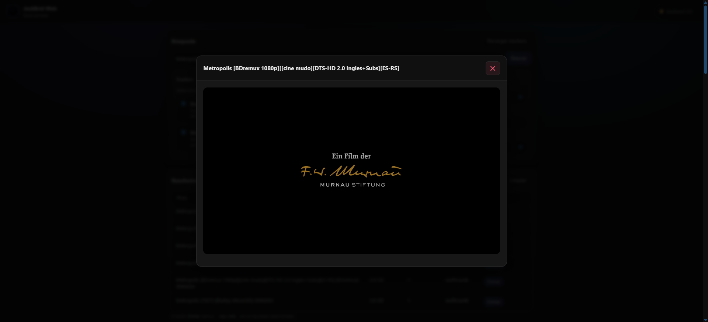

Guía de Uso de JackBrid¶
Aprende a usar todas las características de JackBrid con ejemplos prácticos y casos de uso reales.
Interfaz Principal¶
Vista General¶
Al abrir JackBrid en http://localhost:8998, verás la interfaz principal:

Secciones de la Interfaz
La interfaz está dividida en tres secciones principales:
- Búsqueda (arriba) - Selección de trackers, campo de búsqueda y filtros
- Resultados (medio) - Torrents encontrados en tus búsquedas
- Descargas (abajo) - Elementos añadidos a AllDebrid listos para reproducir o descargar
Indicadores de Estado¶
En la esquina superior derecha verás:
- Backend OK: Conectado correctamente a Jackett y AllDebrid
- Backend Error: Problema de conexión o API Key inválida
Búsqueda de Torrents¶
Paso 1: Seleccionar Trackers¶
Selección de Trackers
- Marca los trackers donde quieres buscar
- Puedes seleccionar uno o varios simultáneamente
- Más trackers = más resultados, pero búsqueda más lenta
Recomendación:
- Para películas:
1337x,YTS,RARBG - Para series:
EZTV,ThePirateBay - Para música:
ThePirateBay,Rutracker
Paso 2: Escribir la Búsqueda¶
Consejos de búsqueda:
✅ Buenas búsquedas:
❌ Búsquedas poco efectivas:
Tips:
- Usa el nombre original en inglés
- Añade calidad si buscas algo específico: 1080p, 4K, BluRay
- Para series, especifica temporada: S01, Season 1
- Para álbumes, añade formato: FLAC, 320kbps
Paso 3: Configurar Filtros¶
Ordenar por¶
| Opción | Cuándo usar |
|---|---|
| Relevancia | Cuando buscas un título específico |
| Seeders | Para descargas más rápidas |
| Tamaño | Para encontrar versiones 4K o comprimidas |
| Fecha | Para contenido reciente |
Límite de Resultados¶
10- Búsqueda rápida50- Buena variedad (recomendado)100- Búsqueda exhaustivaSin límite- Todos los resultados (puede ser lento)
Solo con Seeders¶
- ✅ Activado: Solo muestra torrents con disponibilidad garantizada
- ❌ Desactivado: Muestra todos, incluso torrents muertos
Recomendación: Déjalo siempre activado.
Paso 4: Explorar Resultados¶

Cada resultado muestra información detallada del torrent:
- Título completo - Nombre del archivo con calidad y formato
- Tamaño del archivo - Tamaño total del torrent
- Seeders y Leechers - Disponibilidad y velocidad esperada
- Tracker de origen - Fuente del torrent
- Botón "Enviar" - Añade el torrent directamente a AllDebrid
Información clave: - Seeders: Más seeders = descarga más rápida - Tamaño: Verifica que sea razonable para la calidad - Tracker: Algunos trackers son más confiables - Fecha: Contenido reciente suele tener más seeds
🌐 Gestión de AllDebrid¶
Añadir Torrents¶
Opción 1: Desde los Resultados¶
- Buscar contenido
- Clic en "Añadir a AllDebrid"
- Esperar confirmación
- El torrent aparecerá en la sección "Mis Elementos"
Opción 2: Copiar Magnet¶
- Clic en "Copiar Magnet"
- Ir a AllDebrid Magnets
- Pegar el magnet y enviar
Estados de Descarga¶
Tu contenido pasa por varios estados:
| Estado | Ícono | Descripción | Acción |
|---|---|---|---|
| En Cola | ⏳ | Esperando procesamiento | Esperar |
| Descargando | ⬇️ | AllDebrid descargando | Ver progreso |
| Listo | ✅ | Disponible para streaming | Reproducir/Descargar |
| Error | ❌ | Problema en el torrent | Eliminar e intentar otro |
| Muerto | 💀 | Sin seeders disponibles | Buscar alternativa |
Gestionar Elementos¶
┌──────────────────────────────────────────────────────────┐
✅ Example.Movie.2024.1080p.mkv
📦 1.5 GB | 📅 20 Ene 2024
[▶️ Reproducir] [📋 Copiar Link] [🗑️ Eliminar]
└──────────────────────────────────────────────────────────┘
Reproducir¶
- Abre el reproductor integrado
- Streaming directo sin descargar
- Controles de velocidad, volumen, PiP
Copiar Link¶
- Copia la URL directa al portapapeles
- Útil para:
- Descargar con gestores (IDM, aria2)
- Reproducir en VLC
- Compartir (temporalmente)
Eliminar¶
- Elimina el torrent de AllDebrid
- Libera espacio en tu cuenta
- No afecta a los torrents originales
🎥 Reproducción de Videos¶
Usar el Reproductor Integrado¶
- Clic en "Reproducir" en cualquier elemento listo
- El reproductor se abrirá automáticamente
- El video comenzará en unos segundos
Controles del Reproductor¶

El reproductor integrado Plyr ofrece controles completos para la reproducción:
- Barra de progreso - Desplazamiento rápido a cualquier punto del video
- Controles de reproducción - Play/Pausa y avance/retroceso
- Control de volumen - Ajuste de audio con barra deslizante
- Configuración - Velocidad de reproducción y calidad
- Picture-in-Picture - Ver el video mientras navegas
- Pantalla completa - Modo inmersivo
Funciones: - ▶️/⏸️ - Play/Pausa (Espacio) - ⏮️/⏭️ - Retroceder/Adelantar 10 seg - 🔊 - Control de volumen (↑/↓) - ⚙️ - Velocidad, calidad - 🖼️ - Picture-in-Picture - ⛶ - Pantalla completa (F)
Atajos de Teclado¶
| Tecla | Acción |
|---|---|
Espacio |
Play/Pausa |
F |
Pantalla completa |
M |
Mutear/Desmutear |
↑/↓ |
Volumen ± |
←/→ |
Retroceder/Adelantar 5 seg |
0-9 |
Saltar al % del video (5 = 50%) |
Limitaciones de Audio¶
⚠️ Importante: El reproductor web solo soporta: - ✅ AAC - ✅ MP3 - ✅ Opus - ❌ AC3 - ❌ DTS - ❌ TrueHD
Si no hay sonido:
- Copiar el link del video
- Abrir en VLC:
- VLC reproducirá cualquier códec correctamente
Reproducción Remota¶
En Smart TV¶
- Copiar link del video
- En la TV, abrir navegador web o app VLC
- Pegar y reproducir
En Chromecast¶
- Usar Google Chrome en PC
- Reproducir el video
- Clic en ícono de Chromecast
- Seleccionar dispositivo
En Kodi/Jellyfin/Plex¶
- Copiar link
- Añadir como fuente externa
- Reproducir normalmente
🎯 Trucos y Consejos¶
Maximizar Resultados¶
1. Usa sinónimos y variaciones:
"The Godfather" → "Godfather"
"Star Wars Episode IV" → "Star Wars A New Hope"
"Breaking Bad" → "BrBa"
2. Prueba con y sin año:
3. Busca por código:
Optimizar Velocidad¶
Selección de trackers: - ❌ Seleccionar todos (lento) - ✅ Seleccionar 2-3 específicos (rápido)
Límite inteligente: - Primera búsqueda: 20-30 resultados - Si no encuentras: ampliar a 50-100
Evitar Problemas¶
1. Torrents falsos: - ❌ Tamaño sospechoso (película 4K de 200 MB) - ❌ Muy pocos seeders (< 5) - ❌ Título con muchas keywords spam
2. Errores de AllDebrid: - Torrent muerto → Buscar alternativa con más seeds - Límite excedido → Esperar 24 horas - Error de hash → Torrent corrupto, usar otro
3. Problemas de reproducción: - Video no carga → Verificar conexión a Internet - Audio no funciona → Abrir en VLC - Video tartamudea → Reducir calidad o descargar
📚 Flujos de Trabajo¶
Caso 1: Ver una Película¶
1. Buscar "Inception 1080p"
2. Ordenar por seeders
3. Seleccionar resultado con > 100 seeds
4. Añadir a AllDebrid
5. Esperar 10-30 segundos (estado "Listo")
6. Clic en "Reproducir"
7. Disfrutar en el navegador
Tiempo total: < 1 minuto
Caso 2: Descargar una Serie Completa¶
1. Buscar "Breaking Bad S01 1080p"
2. Añadir a AllDebrid
3. Esperar a estado "Listo"
4. Repetir para S02, S03... S05
5. En cada elemento: "Copiar Link"
6. Usar aria2c para descargas paralelas:
aria2c -x 16 "https://...link1..." "https://...link2..."
Ventaja: Descargas a máxima velocidad sin límites.
Caso 3: Streaming en Smart TV¶
1. Buscar contenido en JackBrid (PC)
2. Añadir a AllDebrid
3. Copiar link del video
4. Enviar link a la TV:
- Email a ti mismo
- Telegram "Mensajes Guardados"
- Pastebin privado
5. En la TV: abrir VLC > Red > Pegar
Caso 4: Colección para Jellyfin/Plex¶
1. Buscar contenido en JackBrid
2. Añadir múltiples elementos a AllDebrid
3. Copiar todos los links
4. Descargar al servidor de medios:
wget -i links.txt -P /media/movies/
5. Escanear biblioteca en Jellyfin/Plex
Caso 5: Música en Alta Calidad¶
1. Buscar "Daft Punk Discovery FLAC"
2. Filtrar por tamaño > 400 MB (FLAC real)
3. Añadir a AllDebrid
4. Copiar link y descargar
5. Importar a biblioteca local
🎓 Mejores Prácticas¶
Gestión de AllDebrid¶
Mantén tu cuenta limpia: - Elimina contenido después de verlo/descargarlo - AllDebrid tiene límite de espacio (varía por plan) - Contenido antiguo puede expirar
Organiza descargas: - Descarga contenido en lotes - Usa nombres descriptivos - Mantén carpetas ordenadas localmente
Privacidad¶
No compartas links directos: - Los links de AllDebrid son personales - Pueden rastrearse a tu cuenta - Se desactivan tras cierto tiempo
Usa VPN (opcional): - AllDebrid ya anonimiza tu IP ante los trackers - VPN adicional para máxima privacidad - No es obligatorio, AllDebrid es seguro
Responsabilidad¶
Contenido legal: - Usa JackBrid para contenido de dominio público - Distribuciones Linux, software open source - Media Creative Commons
Respaldo: - Guarda copias locales de contenido importante - Links de AllDebrid son temporales - No dependas 100% de la nube
❓ Preguntas Frecuentes¶
¿Puedo usar Real-Debrid en lugar de AllDebrid?¶
Actualmente JackBrid solo soporta AllDebrid.
¿Cuánto tarda en procesar un torrent?¶
Depende del tamaño y la disponibilidad: - Archivos pequeños (< 1 GB): 10-30 segundos - Películas HD (1-5 GB): 30-60 segundos - Packs grandes (> 10 GB): 1-5 minutos
¿Puedo usar JackBrid en móvil?¶
Sí, la interfaz es responsive. Funciona en: - ✅ Navegadores móviles (Chrome, Safari) - ✅ Tablets - ❌ No hay app nativa (aún)
¿Se pueden añadir subtítulos?¶
El reproductor integrado soporta subtítulos WebVTT: 1. Descargar subtítulos (.srt) de OpenSubtitles 2. Convertir a .vtt 3. Configuración → Cargar subtítulo